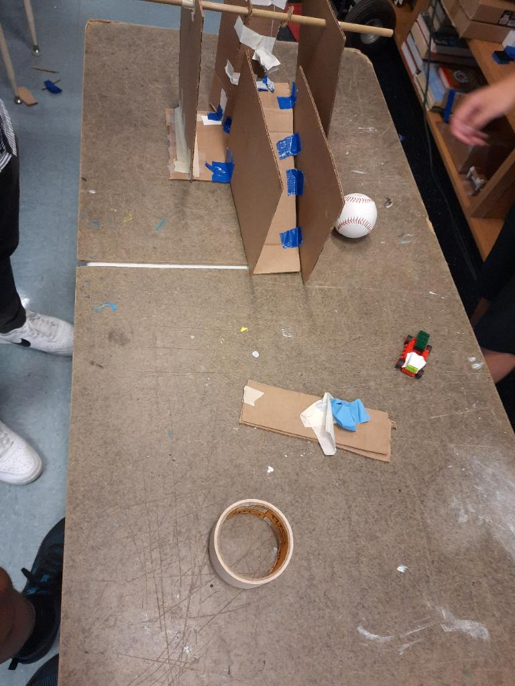
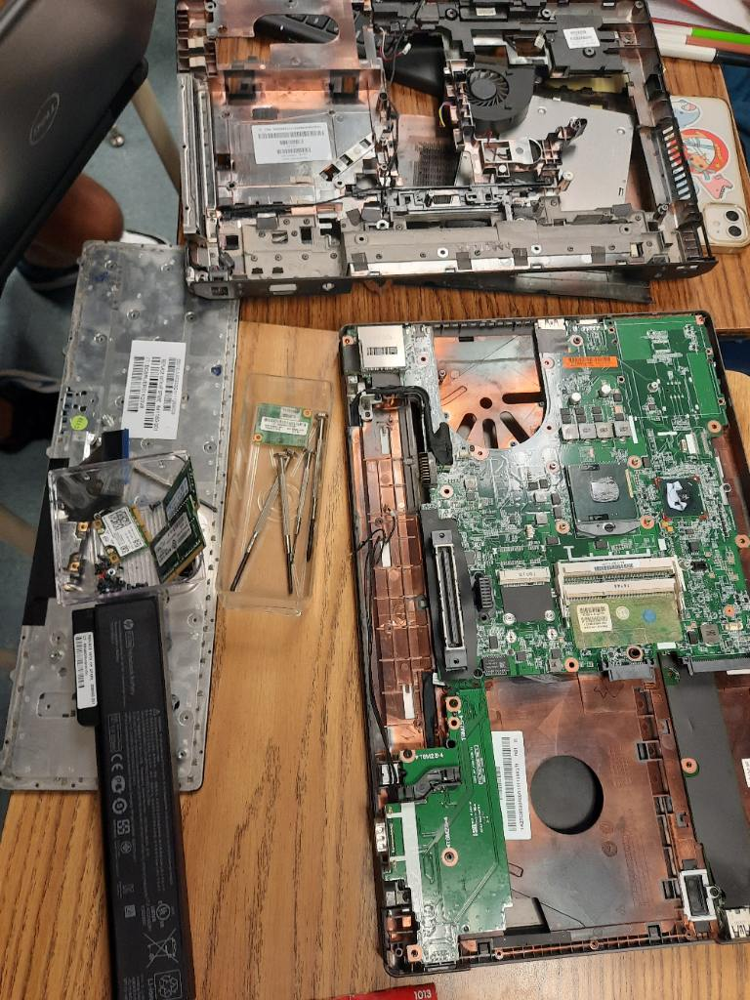
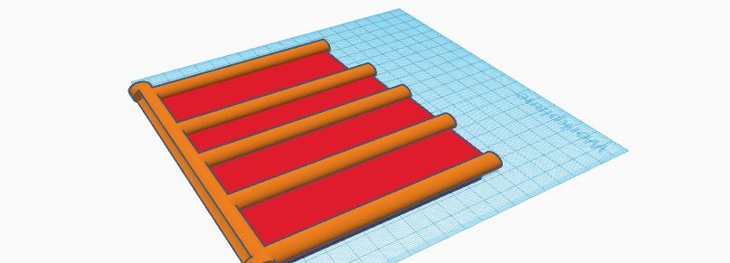

Intro to Engineering (ItE) website
will be incredibly bland since i barely know html
Engineering Journal
sept. 2, 2022
Introduced to Tinkercad and some of the basics. Went over creating holes into basic shapes
using other basic shapes. Created a toaster also :).
Sept. 16, 2022
Built boats from paper it floated for the 5 minutes. Learned that surface area helps boats float
the best and allows them to carry more wieght. Assuming that you oly have one piece of paper and you
can't use tape the best thing to do is to have one flat sheet of paper apparently.
PROJECT 1: Rube Goldberg (Sept. 23, 2022)
The goal of the project was to pop a balloon using a rube goldberg machine made of cardboard
using three basic machines, in our case a pulley, ramp, and wheels. My initial CAD was a pulley
with two cups and putting a baseball in one end will cause the other cup to rise up and hit a car
which then would hit the balloon encased in a box and pop it using a needle. Upon actually trying
to build we had to change one of the cups with an eraser since two cups would hit eachother,
the car instead of being on a flat part of the ramp had to be placed on tape and knocked off
since it was more reliable and easier to set up, and the balloon placed next to a small barrier
instead of in a box since the box would take too much cardboard. The most challenging problem to
fix was setting up the ramp to be stable and be able to be hit and even in the final version is
still unreliable. In the end the ramp was taped to the base plate of the pulley. One of the final
changes made was replacing the system holding the balloon in place from the barrier to taping it
to the table as to allow the car to hit it well enough to pop the balloon. After several attempts
the car was able to pop the balloon.

Sept. 29, 2022
Learned how components in a computer work with eachother. Disassembled
an ancient laptop and identified then labeled parts. Disassembled laptop below.

Oct. 7, 2022
Created a CAD of a prosthetic for any animal. I chose a sea otter's hind flipper.
My CAD is depicted

Oct. 14, 2022
Began CADs for bottle rocket. Goal is to make rocket go the farthest when launched at a 45 degree angle.
made 4 CADs and chose one.
 my CAD
my CAD
Oct. 21, 2022
Finished up with CADS and started to build rockets. Rockets launched friday and ours was da best
so ez. YouTube link https://youtu.be/7AW6oWfmwes the coconut nut is a giant nut...
https://youtu.be/w0AOGeqOnFY